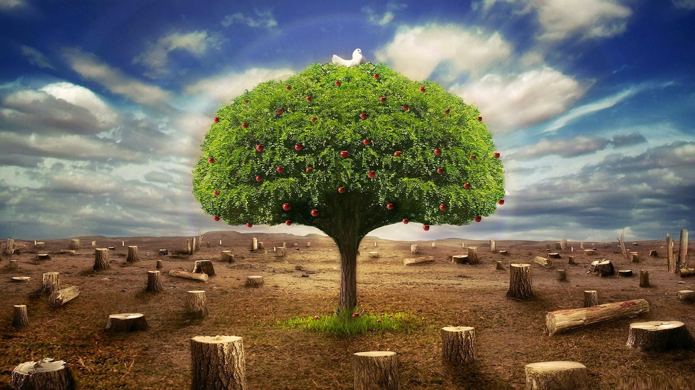

Contaminación Ambiental:
Se entiende por contaminación ambiental la incorporación al medio ambiente de agentes nocivos en cualquier estado y de origen tanto biológico, como físico y químico peligrosos para la salud de los seres humanos, animales y plantas. Mientras que la vida animal y vegetal se ha adaptado siempre perfectamente al ecosistema, la evolución humana en aras del progreso continuo ha adaptado el medio ambiente a sus intereses modificándolo para acomodarlo a sus necesidades con un impacto negativo que se ha venido acelerando geométricamente desde la revolución industrial. En éste sentido los conceptos de cuidado medio ambiental y desarrollo industrial, como origen de la contaminación de aire agua y suelo, han estado en disputa total hasta no hace mucho, ya que la preocupación por los gases emanados en procesos industriales, los vertidos tóxicos, los residuos no degradables generados en la producción y transformación de bienes y servicios, y el exterminio de especies vegetales y animales, pese a deteriorar el medio ambiente en nuestro planeta, y con ello las condiciones para la vida de todos los seres que lo habitamos, no era considerado importante dentro de las empresas sino como obstáculo económico. Desde hace algunas décadas, las consecuencias del impacto medio ambiental producido por la población mundial y la industria, está concienciando a los gobiernos de muchos países sobre la necesidad de adoptar medidas eficaces para frenar y reducir un desequilibrio de proporciones catastróficas, con campañas dirigidas a la población, y medidas específicas dirigidas al sector productivo. Tipos de fuentes de emisión de la contaminación ambiental Dentro de la contaminación ambiental se pueden distinguir dos tipos fundamentales de fuentes de emisión, en función de su origen: Contaminación de origen natural, que se generan en la naturaleza sin intervención de la mano humana. Contaminación de origen antropogénico, que se produce como consecuencia de las acciones humanas. Entre las fuentes de emisión de contaminantes de éste origen, las principales se producen por vía industrial, comercial, de transporte y domésticas.
